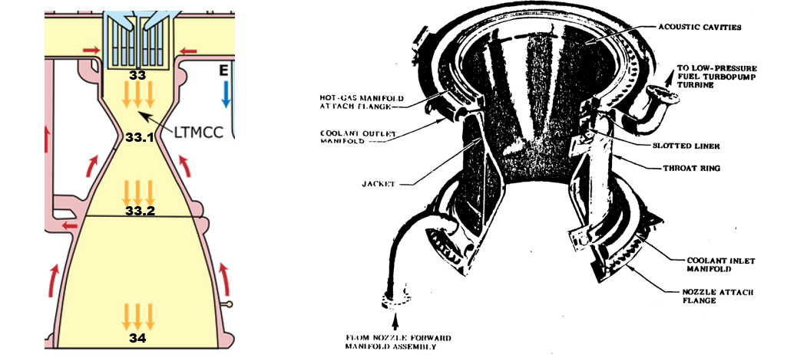
Figure 5.1.1: Large Throat Main Combustion Chamber (LTMCC) [52]
The first step in modelling the flow through the LTMCC is to define the geometry of the chamber. We assume a cylindrical design will be used with a converging-diverging throat, as shown above in Figure 5.1.1. The analysis begins by determining the cross-sectional area of the throat (Station 33.1).
Step 1: Find the Cross Sectional Area of the Throat
The pressure, mixture ratio, and enthalpies of the propellants entering the chamber at Station 33 are known from the analysis conducted in Section 4.5. This provides all of the thermodynamic properties of the resulting combustion gas (see Table 4.5.4 ). Interestingly enough, all of the following calculations are dominated by only two properties predicted by the combustion model: specific heat ratio, $\gamma$, and specific gas constant, $R_s$.
At the throat (Station 33.1) conservation of mass dictates that the the Mach number, $ M_{33.1} $, has to be exactly one. This allows us to use Equation 5.1.1 in an implicit Newton-Raphson scheme[53] to solve for nozzle exit Mach number, $M_{34}$, as a function of area ratio, $\epsilon = \frac{A_{34}}{A_{33.1}}$. This equation and the resulting plot are shown below. It should be noted that the following equations are standard isentropic relations for variable area flow[28] . These equations do not account for entropy inducing effects such as heat transfer through the nozzle walls or friction due to viscosity. Nevertheless, they still provide accurate results. We will return to this concept and update the model to account for the effects of entropy in Section 5.3.
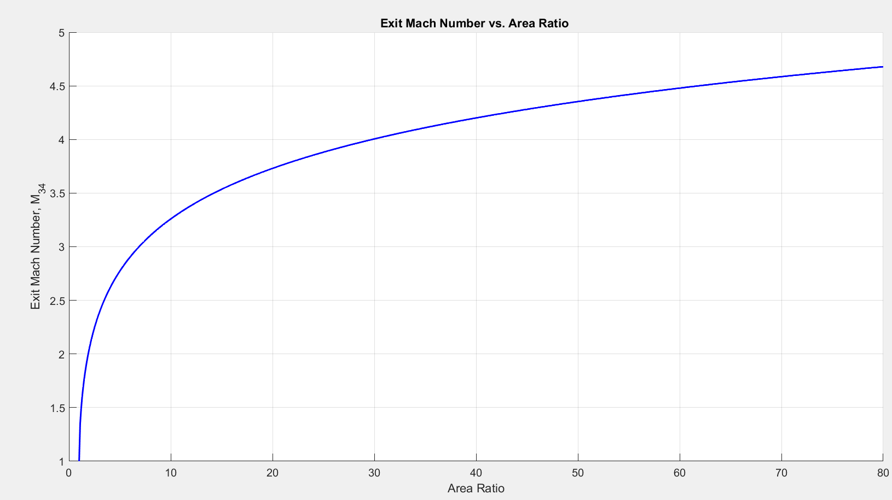
Figure 5.1.2
It is important to make one distinction prior to moving on in this section. The value of $P_{33}$ is the stagnation pressure inside the combustion chamber. In Reference [2], Boeing reports this value as 2871 psia (see Table 1.3.1). In reality, it is difficult to measure the stagnation pressure inside the combustion chamber where instrumentation has a tough time surviving the associated high temperatures and pressures. The stagnation pressure reported in Table 1.3.1 is therefore mathematically derived from the measured static temperatures and pressure at the injector face. This conversion must take in to account the effect chemical reactions that occur in the chamber as the flow moves from the injector face through the throat. After the stagnation pressure is predicted, it must be verified by evaluating the actual performance of the engine during a hot-fire test[38] . The analysis used on this website does not account for equilibrium chemical reactions occurring beyond the initial injection/combustion (frozen flow analysis). Therefore the associated mole fractions, molecular weight, and specific heat ratio of the resulting mixture predicted by the model on this website differ slightly from the true values encountered during actual tests of the RS-25.
Neglecting to account for this difference means that the nozzle stagnation pressure used on this website will differ from the stagnation pressure reported by Boeing. If Boeing’s value of 2871 psia is selected as the value for $P_{33}$ in the following calculations, the model will overpredict the engine’s mass flow rate and thrust by approximately 5.9%. In order to correct this error, $P_{33}$ has been reduced to approximately 2700 psia for all of the following calculations. This is a reasonable adjustment to make. Reference [38] reports that the pressure drop across the injector face of a combustion chamber is typically on the order of 20 percent. Using the adjusted stagnation pressure 2700 of psi, along with an injector face Mach number of 0.22602 gives a static pressure at the chamber side of the injector face of 2619 psia. This is corresponds to a 15% drop in static pressure from the reported values on the inflow side of the injector face (see Table 1.3.1, Stations 30 and 32).
Alternatively, instead of reducing the nozzle stagnation pressure, one could adjust the cross-sectional area of the nozzle’s throat until the engine’s mass flow rate and thrust align with the correct values. Reference [86] contains an excellent discussion that utilizes this procedure. For this website, the nozzle geometry will be maintained and we will proceed by decreasing the throat stagnation pressure ($P_{33}$) to 2700 psia.
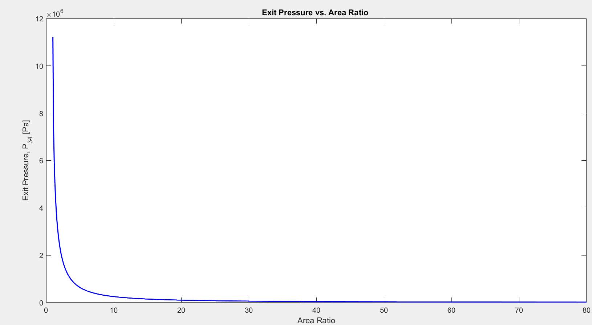
Figure 5.1.3
Knowing the exit pressure allows us to calculate the nozzle’s vacuum thrust coefficient, $C_f$, as a function of area ratio using the familiar equation from Section 3.4: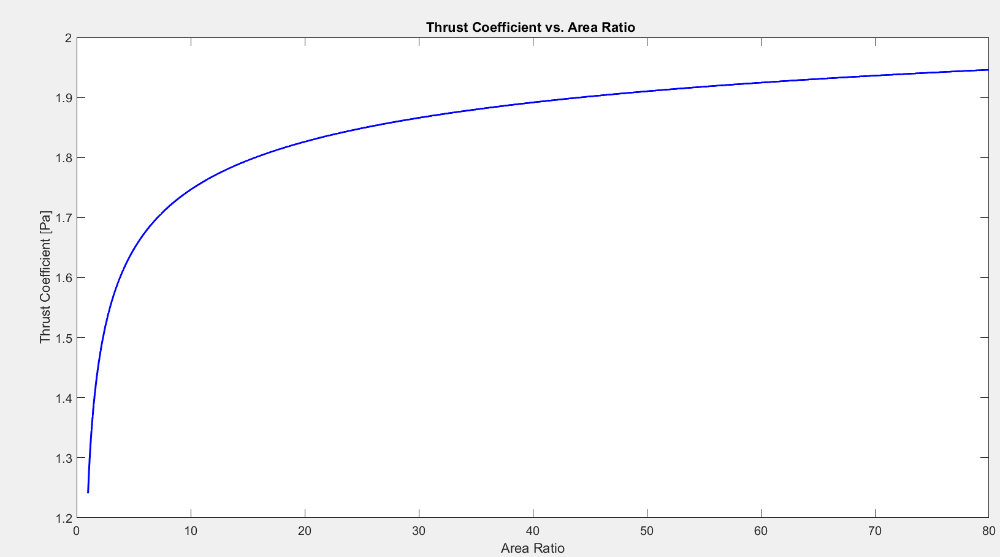
Figure 5.1.4
We are now finally equipped to solve for the throat area, $A_{33.1}$, as a function of area ratio. In the following equation, $F$ represents the desired thrust produced by the nozzle at vacuum conditions, 491,000 pounds (see Table 1.3.1)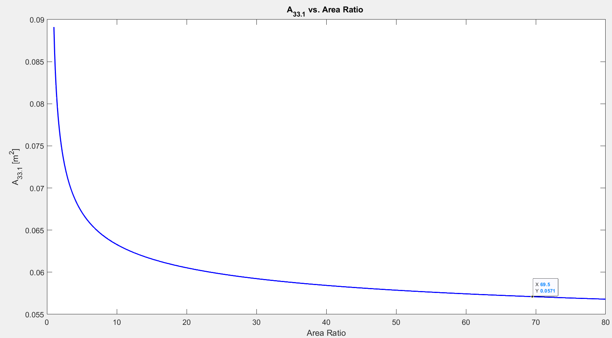
Figure 5.1.5
Once area ratio and throat area are known, we can multiply them together and solve for exit area, $A_{34}$: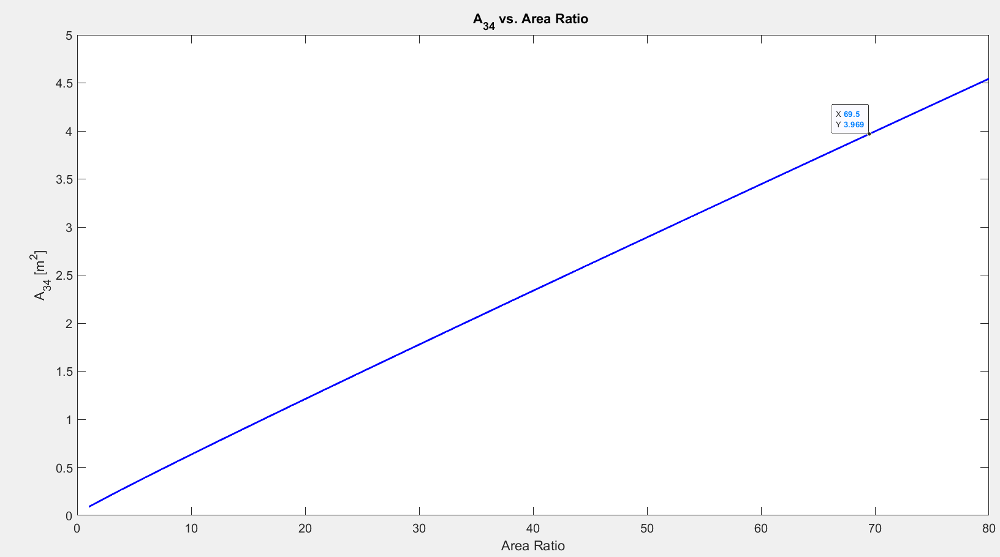
Figure 5.1.6
The last remaining step is to select an appropriate area ratio and read the corresponding throat and exit areas from Figures 5.1.5 and 5.1.6. This presents a challenge. All of the area ratios plotted above are theoretically possible. How do we select the optimal area ratio? This can be answered by examining the engine’s propellant consumption rate as a function of area ratio. First, we must calculate the static temperature and pressure in the nozzle throat, $T_{33.1}$ and $P_{33.1}$ respectively using the known stagnation values of $T_{33}$ and $P_{33}$. This is done with the following equations. Reminder: at the throat (Station 33.1) M=1.0.Now that temperature and pressure at the nozzle throat are known, we can use the ideal gas law (Equation 2.1.2) and solve for density at the throat, $\rho_{33.1}$
Sonic velocity at the throat is modeled by Equation 5.1.5:
We can combine these equations and finally an reach expression for the required mass flow rate, $\dot m$:
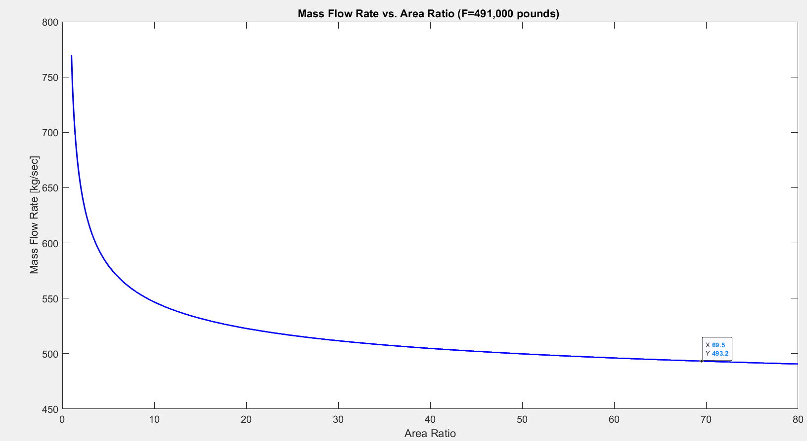
Figure 5.1.7
Figure 5.1.7 shows that the desired 491,000 pounds of thrust can be achieved with many different area ratios. As area ratio increases the required amount of propellant decreases. Therefore to maximize fuel efficiency we should select a very large area ratio. But this does not quiet tell the entire story. As area ratio increases, Figure 5.1.7 shows that the propellant flow rate approaches an asymptotic value. In contrast, Figure 5.1.6 shows that exit area continues to increase linearly with area ratio. This establishes a regime of diminishing returns. Increasing area ratio much higher than 60 will indeed give a slight increase in fuel efficiency for the desired thrust (i.e. specific impulse), but it comes at the expense of a much larger (and heavier nozzle). At some point the gain in fuel efficiency is overwhelmed by the structural mass of the enormous nozzle. For now, we will rely on the analysis provided by Aerojet Rocketdyne and assume the optimal area ratio is 69.5. The corresponding throat area, exit plane area, and propellant mass flow rate are read from Figures 5.1.5 - 5.1.7 and tabulated below. The model developed here matches Rocketdyne’s geometry data to within 5%, which is a reasonable preliminary estimate. The propellant flow rate is accurate to within 1%.| Predicted Value | Actual Value[2] | Relative Error (%) | |
|---|---|---|---|
| $A_{33.1}$ $[m^2]$ | 0.05712 | 0.06002 | 4.83% |
| $A_{34}$ $[m^2]$ | 3.969 | 4.132 | 3.94% |
| $\dot m$ $[kg/sec]$ | 493.2 | 492.1 | 0.22% |
Table 5.1.1
Step 2: Determine Chamber Volume
In Step 1 we assumed the combustion chamber would be modeled as a cylinder. We need to determine the length of this cylinder, $L_c$, and its cross-sectional area at the injector face, $A_{33}$, in order to find its volume, $V$. According to the American Institute of Aeronautics and Astronautics (AIAA), the procedure do do this can be “rather arbitrary”[38] . The chamber must be sufficiently large to give the propellants time to mix and combust before accelerating through the throat. But if the chamber is too large, there will be excessive structural mass penalties, larger cooling requirements, and higher frictional losses in the flow. Empirical data from previous design experience is leveraged to select proper dimensions. The following correlation is suggested for determining injector area:[54]
where $D_{33.1}$ is the diameter of the throat in cm. Plugging our estimate for $D_{33.1}$ into this equation gives an estimated value of $A_{33}$ of approximately 0.1347 $m^2$ which corresponds to a diameter of 0.414 m. This differs from the true diameter (0.454 m)[52] by only 8.8%. Not too bad for a “rather arbitrary” empirical correlation!
Now we turn our attention to estimating the length, $L_c$, of the combustion chamber. $L_c$ is the distance between the injector face (Station 33) and the throat (Station 33.1). To accomplish this we define a “characteristic length” $L^*$ as follows:
$V_c$ is the volume of the cylindrical combustion chamber, and $A_{33.1}$ is the throat area. $L^*$ must be suffiently large to allow the propellants time to mix and burn before they are ejected from the combustion chamber. Selecting an appropriate length to create the necessary “stay time” in the chamber requires a complex thermochemical analysis. It is much easier to rely on previous design experience for an initial estimate. The AIAA recommends the following values of $L^*$:[55]
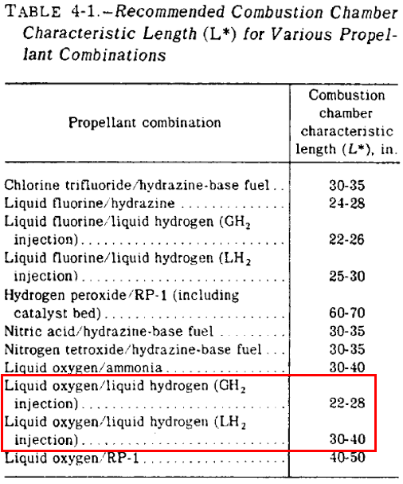
Figure 5.1.8
After selecting an appropriate value of $L^{*}$ from this table, we can use Equation 5.1.5 to solve for the chamber volume, $V_c$. The actual actual length of the combustion chamber, $L_c$, is then determined with following equation:
Using these equations we can plot $L_c$ as a function of $L^*$ over the range of values suggested in Figure 5.1.8. The actual value of $L_c$ on the SSME is 15.222 inches [52] and has a corresponding $L^ *$ of 36 inches. This lines up well with the data suggested above.
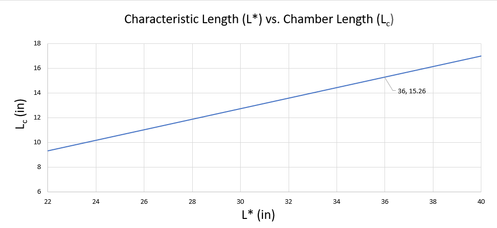
Figure 5.1.9
Let’s take a moment to review our progress. We utilized properties of the combustion gas generated in the LTMCC to predict the SSME’s required mass flow rate, nozzle exit area, throat area, injector area, and combustion chamber length. This geometry is summarized in the pictures below, using actual data from the RS-25. Note that this analysis of the RS-25 Block IIa uses the “Large Throat” data. The reason the SSME’s combustion chamber is at times called the “Large Throat” Main Combustion Chamber, rather than just the “Main Combustion Chamber” is because there are actually two different chamber configurations that have been used throughout the SSME lifecycle. The RS-24 through the RS-25B used the “Main Combustion Chamber.” The RS-25C Block II-A and beyond use the “Large Throat Main Combustion Chamber."[44] As the name implies, the throat geometry differs between these two configurations. Expanding the throat diameter allowed the large throat configuration to produce the same amount of thrust while simultaneously reducing high chamber pressures and temperatures[56] .
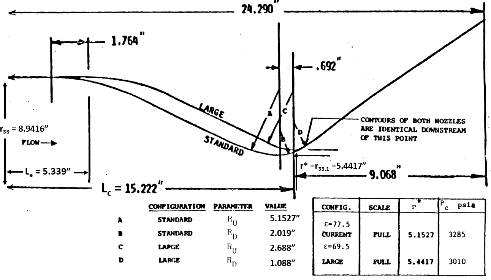
Figure 5.1.10 [52]
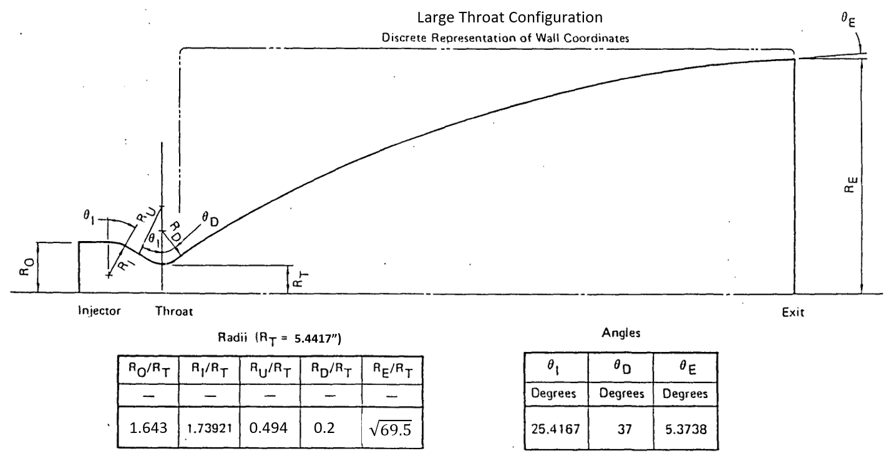
Figure 5.1.11 [57]
Step 3: Generate Wall Coordinates
Up to this point, we have been solving for linear dimensions of the combustion chamber such as the diameters of the injector face and throat, and the length of the chamber, $L_c$. But the pictures above show that the chamber walls are curved. We have not yet accounted for this geometry. Fortunately the exact design of the curves inside the combustion chamber do not require any kind of “optimum” shape analysis. Prior to reaching the throat, the flow is relatively low speed (subsonic). A gently arcing wall with a radius of curvature of similar magnitude to the throat radius is usually sufficient to prevent excessive losses. Using the geometry data in Figures 5.1.10 and 5.1.11 we can derive a set of piecewise equations to represent these arcs as a function of axial position through the LTMCC. The coordinate system originates with $x=0$ inches at the injector face and $r=0$ inches at the LTMCC centerline. The resulting equations and chamber contour are shown below.
| x (in) | r (in) |
|---|---|
| $ 0 < x \leq L_e $ | $ r_{33}$ |
| $ L_e < x \leq L_e+r_1\text{sin}\left(\theta_1\right) $ | $ \sqrt{r_1^2-(x-L_e)^2}+r_{33}-r_1 $ |
| $ L_e+r_1\text{sin}\left(\theta_1\right) < x \leq L_c-r_u\text{sin}\left(\theta_1\right) $ | $ \frac{r_t+r_u-r_{33}+r_1-\left(r_u+r_1\right)\text{cos}\left(\theta_1\right)}{L_c-L_e-\left(r_u+r_1\right)\text{sin}\left(\theta_1\right)}\,x+r_{33}-r_1+r_1\text{cos}\left(\theta_1\right)-\frac{r_t+r_u-r_{33}+r_1-\left(r_u+r_1\right)\text{cos}\left(\theta_1\right)}{L_c-L_e-\left(r_u+r_1\right)\text{sin}\left(\theta_1\right)}\left(L_e+r_1\text{sin}\left(\theta_1\right)\right) $ |
| $ L_c-r_u\text{sin}\left(\theta_1\right) < x \leq L_c $ | $ -\sqrt{r_u^2-(x-L_c)^2}+r_t+r_u $ |
| $ L_c < x \leq L_c + r_D\text{sin}\left(\theta_D\right) $ | $ -\sqrt{r_D^2-(x-L_c)^2}+r_t+r_D $ |
Table 5.1.2
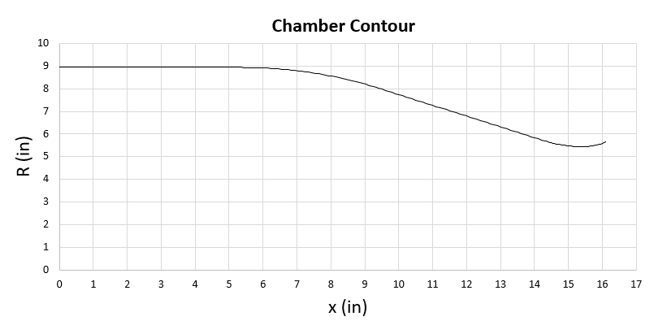
Figure 5.1.12
Note that the wall coordinates plotted in Figure 5.1.12 stop at $x=16.1$ inches. The actual LTMCC is 24.29 inches long (see Figure 5.1.10). We stopped plotting wall coordinates at $x=16.1$ inches because this is the location where the nozzle contour and the LTMCC contour become identical (take a look at location “D” in Figure 5.1.10). The LTMCC extends out to $x=24.29$ inches before interfacing with the nozzle attach flange, but the wall contour for both of these devices can be described by the same equation from $x = 16.1$ inches onward. The single equation modeling the final 8 inches of the LTMCC and the entire length of the nozzle is presented in the following section.